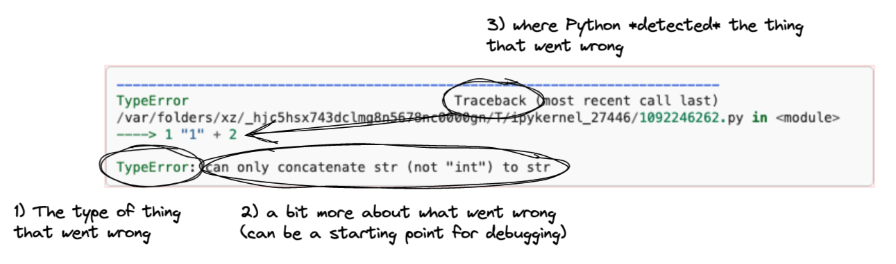

Debugging and Help-Seeking#
What are bugs and debugging and why should we care about them?#
Fun fact: in computing, there is lore that says the term “bug” can be traced to Grace Hopper finding a moth in the computer that caused a system error!

Bugs are basically problems in our code that make the program do something different than what we want.
Bugs are a fact of life. We all make mistakes. Basically nobody writes perfect code the first time for any real problem. One estimate is that professional programmers spend about 35-50 percent of their time validating and debugging software.
So debugging is actually a fundamental computational thinking skill.
How NOT to debug#
The biggest mistake I see beginners make: keep changing things to make errors go away.
Example conversation: Q: “Why did you do that?” A: “No idea… I just wanted to tinker to see if it works
Why is this not productive/effective?
Often there are many different things going wrong. We want to keep track of what’s happening and under what conditions so our “fixes” don’t create new problems (this happens more often than you’d think!)!
Also this is really really inefficient, and eventually stops working when you’re attacking problems of realistic scale (e.g., towards the end of this class, or in INST 326).
In fact, it may have already stopped working for you.
The fundamental concept of debugging: interrogating and refining a mental model of your code.#
The fundamental concept of debugging is interrogating and refining a mental model of your code: what is it actually doing? And how does it match up with what you want it to do?
This is because the root cause of a bug is a mismatch between what you want to happen, and what you’re telling the computer to make happen (which is what will actually happen)
Sometimes it’s a mismatch in syntax: you know what you want to happen, but you didn’t express it in legal code.
More commonly, it’s a mismatch in semantics: between what you thought you told the computer to do, and what you actually did. That is, you told the computer to do something, and it did, but what you said wasn’t actually what you wanted/needed to happen.
The fixes are different for syntax vs. semantic mismatches. But in both cases, clarity on your intent is critical.
This is why debugging is tightly related to problem formulation - the better and more explicit your model, the better you’ll be able to pinpoint where something is going wrong
Practical Strategies and Principles for Debugging#
Here are some practical strategies and principles for debugging:
Error messages as miscommunication detection#
Frequently your program will need to be debugged not because the program was not “legal code”, but because it produces unexpected behavior.
But sometimes you do get error messages, and it’s useful to learn how to read them. We’ve talked about this before but let’s review!
{kind=link}
Error code and message: useful for understanding the general types of reasons you might be seeing your problem, maps to common fixes
But! Also identifies mismatches between your intent/assumptions and what you’re communicating to Python
E.g.,
TypeError: you’re expecting a value to be of a certain type, but it’s notE.g.,
SyntaxError: you’re expecting a line of code to be legal, but it’s not
Traceback: roughly where in the program Python noticed that there was a problem.
NOTE! This is not necessarily where the problem is! Often the problem (and fix) is located upstream
But it is still a useful place to start
Remember: These error messages only show up for “syntax mismatches” (i.e., problems that stem from us not giving legal code to Python); they may or may not show up for semantic mismatches (i.e., problems that stem from us giving legal code to Python, but it’s different from what we actually want it to do). Note: syntax errors or mismatches described here include SyntaxError codes, but also others we’ve seen, like NameError, IndentationError, TypeError, IndexError, and so on.
From “it’s not working” to checking assumptions#
The most common thing I hear when students ask for help is, “It’s not working”.
We need to shift from “it’s not working”, to “i expected x, and i got y”, or “. This requires something more specific than “i expected it to work, and it didn’t!”
This is a massive bang-for-your-buck habit change to target.
Here are ways to get there:
Explicitly articulate your mental model#
Be explicit about your mental model: what do you believe you are asking your code to do?
This is the job of our problem formulation!
And our help-seeking template
Document your code!#
It also really helps to write comments for each line in your code: what is it actually doing? Is that the same as what it should be doing? Is anything missing?
You should try to write comments that are closer to your intended meaning / English, and not closer to pseudocode.
Comments that simply restate the code (essentially) are not very useful. You should force yourself to think through what line of code is “actually” doing and whether it matches with what you want it to do.
Systematic testing#
Notice how we ask you to test your function in multiple ways? And our PCE scoring functions actually contain multiple test cases?
This is a core strategy that helps you to check your assumptions.
Test cases are part of a more general strategy of automated testing, including “unit testing” in professional practice, and is a cornerstone of effective programming, since it is somewhat feasible to use print statements to “see in your code” for the scale of programs you’re working with rn, but is basically impossible for most real-world complex code bases.
Learn how to ask for help!#
Last but not least, often it helps just to talk to someone or something out loud as you think through and work through the problem! Professional programmers call this “rubber duck debugging”, a legendary method in software engineering practice: https://rubberduckdebugging.com/
But there is actually a lot of commonality and inter-relatedness between debugging and help-seeking. So help-seeking strategies deserve their own discussion! Here is a short article with a step-by-step procedure that can really help you and help others help you efficiently and effectively: https://docs.google.com/document/d/1PXkXKko906a6zivJYvZQ8dMsLqFZ9RZbc5Aa4C-wWiw/edit?usp=sharing
That’s a lot of content! But this is quite effective and well worth practicing.
Practice!#
Here: debugging example practice
To help you practice, your rubric for the final project deliverable for Project 3 will include the requirement that you include bug documentation, based on these help-seeking guidelines. But I recommend you start practicing this now, so I am offering an extra credit assignment to get started early with a debugging report
Recommended resources:#
The Debugging Mindset - ACM Queue (excellent overview of the core concept of mental model mismatches being the root cause of bugs)
How to debug small programs (has some good overall ideas, plus pointers to more advanced techniques like assertions and unit testing)
A debugging manifesto (expands a lot more on the strategies we discussed today, including into a wonderful zine; also a great person to follow on Twitter/Mastodon for learning how to program.)